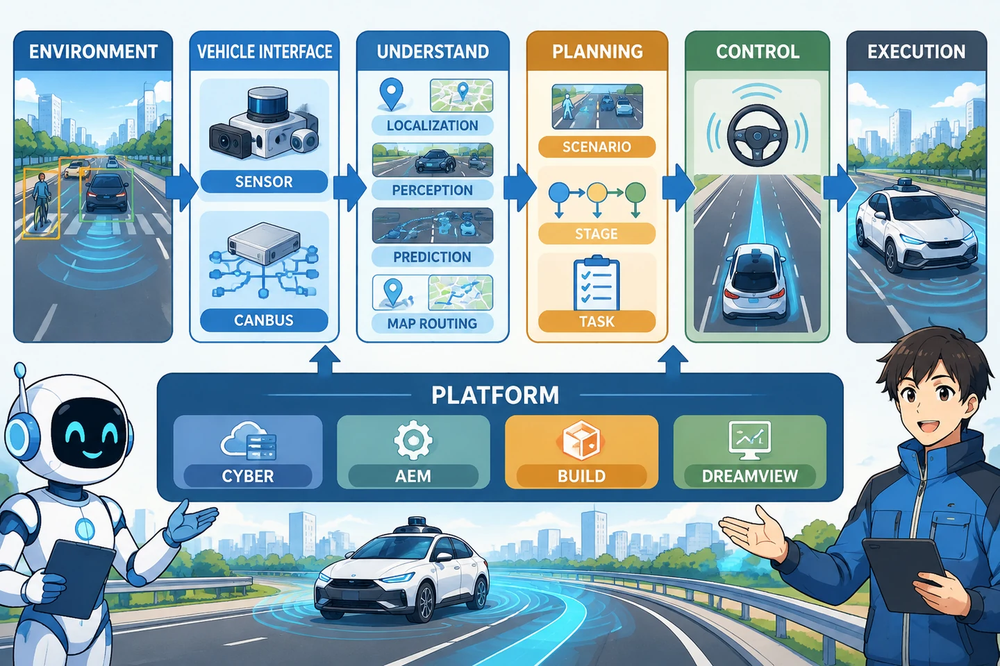

Unit 01 - Project Map
Apollo 与 Planning 全景地图
建立 Apollo 与 Planning 的整体地图，认识 Component、Planner、Scenario、Stage 和 Task。
本课只建立地图，不深入函数细节。目标是先知道 Apollo 是什么、Planning 在哪里，以及 Scenario、Stage、Task 各代表什么。
1. 学习信息
- 预计用时：60～90 分钟。
- 难度：入门。
- 前置要求：至少了解第 00 课中的 Linux、Docker、AEM 和 DreamView。
- 本课不要求会 C++。
- 本课不要求理解路径优化、速度优化和数学公式。
2. 学完本课应能做到
- 说出 Apollo 的主要组成部分。
- 说出 Planning 在自动驾驶链路中的位置。
- 区分
application-pnc和ApolloAuto/apollo。 - 解释 Component、Planner、Scenario、Stage、Task 的直觉含义。
- 找到
modules/planning的主要目录。 - 画出 Planning 的简化数据流。
- 说出一轮规划至少需要哪三类输入。
3. Apollo 整体架构的简单理解
先不要背所有模块。先看 Apollo 分为哪些层，以及 Planning 在其中接收什么、输出什么。
Apollo 不是一条“感知 -> 规划 -> 控制”的单线，而是分层的协同系统。可以先用下面六个问题理解整体结构：
| 层次 | 这一类组件回答什么问题 | 典型内容 |
|---|---|---|
| 车辆与环境层 | 车外发生了什么？ | 道路、车辆、障碍物、交通信号 |
| 车载接口层 | 车辆能看到什么、当前状态如何？ | 传感器、驱动、Canbus、底盘状态 |
| 环境理解层 | 车在哪里、周围是什么、别人接下来怎么动？ | 定位、感知、预测、地图、路由 |
| 决策与规划层 | 自车接下来应该怎么走？ | Planning、Scenario、Stage、Task |
| 控制与执行层 | 怎样把轨迹变成油门、刹车和转向？ | Control、底盘执行 |
| 基础设施层 | 这些模块怎样运行、通信、构建和观察？ | Linux、Docker、AEM、Cyber、buildtool、DreamView |
把主链路和横向能力放在一起看：

读图时抓住三条线：
- 主链路：环境 -> 车载数据 -> 环境理解 -> Planning -> Control -> 执行。
- 横向能力：Cyber、AEM、buildtool、DreamView 不是规划算法，但它们支撑整个系统运行。
- Planning 的边界：Planning 接收定位、底盘、预测、地图和路由信息，输出
ADCTrajectory，然后把轨迹交给 Control。
这比单纯的“感知 -> 规划 -> 控制”多解释了两件事：
- 上游数据不是一个模块产生的，而是定位、感知、预测、地图和路由共同提供。
- Planning 不是孤立的算法，而是运行在 Cyber、构建工具和仿真环境中的插件系统。
3.1 基础设施层
包括：
- Linux 操作系统。
- Docker 运行环境。
- AEM 环境管理工具。
buildtool构建工具。- Cyber 通信框架。
- DreamView 可视化界面。
初学阶段只要知道：
Linux 负责运行
Docker 负责隔离环境
AEM 负责启动和管理 Apollo
buildtool 负责下载、安装和编译代码
Cyber 负责模块之间通信
DreamView 负责观察仿真
3.2 数据和功能模块层
常见模块包括：
| 模块 | 简单作用 |
|---|---|
| 定位 Localization | 判断车辆在哪里、朝向如何 |
| 感知 Perception | 识别车辆、行人、车道和交通灯 |
| 预测 Prediction | 推测其他交通参与者未来怎么动 |
| 规划 Planning | 决定自车未来怎么动 |
| 控制 Control | 把轨迹转换成油门、刹车和转向 |
| 地图 Map | 提供道路和车道信息 |
| 路由 Routing | 提供从起点到终点的路线 |
| Canbus | 读取车辆状态并发送执行命令 |
| DreamView | 显示仿真和模块状态 |
3.3 Planning 的位置
Planning 接收上游信息，向前输出一条轨迹：
定位 + 底盘状态 + 预测障碍物 + 地图路线 + 交通规则
|
v
Planning
|
v
ADCTrajectory
|
v
Control
路径主要回答：
车辆要沿什么几何路线走
轨迹还要回答：
什么时候到哪里
速度是多少
加速度是否平滑
控制模块是否可以执行
本课程后续会经常看到 Trajectory。先记住它是“带时间的运动计划”。
4. 两个容易混淆的工程
4.1 application-pnc
这是第 00 课安装的学习/比赛工作空间：
ApolloAuto/application-pnc
它的特点是：
- 面向初学者和比赛。
- 已经准备好 PnC 相关依赖描述。
- 使用 AEM 启动环境。
- 使用 buildtool 下载和编译 Planning 代码包。
- 相比完整 Apollo 主仓库更轻。
4.2 ApolloAuto/apollo
这是完整官方主仓库：
ApolloAuto/apollo
它的特点是：
- 包含 Apollo 更完整的代码和模块。
- 适合作为源码阅读和结构核对的权威基线。
- 不一定是你当前比赛环境直接使用的全部内容。
本课程采用的方式：
运行学习：application-pnc
代码核对：ApolloAuto/apollo
两者不是同一个仓库，不能混为一谈。
5. Planning 的五个核心词
5.1 Component：入口
Component 是 Planning 对外接收和发送消息的入口。
可以把它理解为：
Planning 模块的大门
它负责：
- 接收上游输入。
- 启动一次规划流程。
- 发布规划轨迹。
当前关键类名：
PlanningComponent
5.2 Planner：规划器
Planner 决定采用哪一种总体规划策略或框架。
可以把它理解为：
选择并组织规划流程的负责人
重点类：
PublicRoadPlanner
5.3 Scenario：场景
Scenario 表示当前处在什么驾驶情境。
例如：
- 正常车道跟随。
- 红灯前停车。
- 无保护左转。
- 停止牌路口。
- 靠边停车。
- 代客泊车。
可以用生活例子记忆：
Scenario = 今天遇到了什么交通情况
5.4 Stage：阶段
一个 Scenario 可能分成多个阶段。
例如通过停止牌路口可以简化为：
接近停止牌
-> 停车观察
-> 判断是否安全
-> 通过路口
这里的每一步都可以理解为一个 Stage：
Stage = 当前场景进行到了哪一步
5.5 Task：具体任务
Stage 会执行一个或多个 Task。
Task 是真正完成某项具体计算或决策的单元。
例如：
- 生成车道跟随路径。
- 计算速度边界。
- 处理障碍物。
- 检查交通灯。
- 判断是否需要停车。
可以记成：
Task = 某一阶段中要做的一件具体工作
5.6 四者关系
Planner
-> ScenarioManager 选择 Scenario
-> Scenario 组织 Stage
-> Stage 执行 Task
-> 生成路径、速度或决策
6. modules/planning 目录地图
在 application-pnc 中下载 Planning 代码后，通常可以找到：
modules/planning/
主要目录：
| 目录 | 新手理解 |
|---|---|
planning_component |
入口、启动和配置 |
planning_interface_base |
Planner、Scenario、Stage、Task 等接口规范 |
planning_base |
Frame、参考线、路径、速度等公共数据和工具 |
planners |
具体规划器，重点是 public_road |
scenarios |
各种驾驶场景 |
tasks |
场景中执行的子任务 |
traffic_rules |
交通灯、停止牌、人行横道等规则 |
pnc_map |
地图处理和参考线生成 |
planning_open_space |
泊车、掉头等开放空间规划 |
新手暂时不要平均阅读所有目录。优先顺序：
scenarios
-> tasks
-> planning_interface_base
-> planners/public_road
-> planning_component
7. Planning 的简化数据流
先记住下面这条简化流程，不要过早关注类内细节：
上游输入
|
v
PlanningComponent
|
v
PlanningBase / OnLanePlanning
|
v
PublicRoadPlanner
|
v
ScenarioManager
|
v
Scenario
|
v
Stage
|
v
Task / TrafficRule
|
v
ADCTrajectory
每个词只需要先记住一句：
| 名称 | 一句话 |
|---|---|
| PlanningComponent | 接收输入、发布输出 |
| PlanningBase | 提供 Planning 的基础框架 |
| PublicRoadPlanner | 公共道路规划的主规划器 |
| ScenarioManager | 判断和切换当前场景 |
| Scenario | 当前是什么驾驶情境 |
| Stage | 场景进行到哪个阶段 |
| Task | 当前阶段具体做什么 |
| TrafficRule | 不能违反哪些交通规则 |
| ADCTrajectory | 最终输出的轨迹 |
8. 三类主要输入
先记住三类：
/apollo/localization/pose
定位：车辆在哪里
/apollo/canbus/chassis
底盘：车速、挡位等车辆状态
/apollo/prediction
预测：其他交通参与者未来可能怎么动
Planning 还会使用地图、路由、交通灯和命令等信息，但上面的三类足以建立第一版理解。
9. 主要输出
Planning 通过：
/apollo/planning
发布：
ADCTrajectory
对新手来说，只要先理解：
ADCTrajectory = 自车未来一段时间的运动计划
10. 动手实验：找到架构地图
实验 10.1：找到 Planning 目录
进入 Apollo 工作环境后执行：
find modules/planning -maxdepth 1 -type d | sort
如果你的工作空间使用官方完整仓库，也可以在仓库根目录执行：
find modules/planning -maxdepth 1 -type d | sort
记录输出中的目录名称。
实验 10.2：找到 Scenario
find modules/planning/scenarios -maxdepth 1 -type d | sort
重点寻找：
lane_follow
stop_sign_unprotected
traffic_light_protected
实验 10.3：找到 Task
find modules/planning/tasks -maxdepth 1 -type d | sort
重点寻找：
lane_follow_path
speed_bounds_decider
实验 10.4：找到 TrafficRule
find modules/planning/traffic_rules -maxdepth 1 -type d | sort
重点寻找：
crosswalk
traffic_light
stop_sign
实验结论
用一句话分别回答：
Scenario 是：
Stage 是：
Task 是：
TrafficRule 是：
11. 常见误区
误区 1：Scenario 就是代码文件夹
文件夹只是一个场景插件的存放位置。真正的 Scenario 表示运行时匹配到的驾驶情境。
误区 2：Task 就是普通函数
Task 通常是具有 Init、Execute 生命周期的类，并会读取 Frame 和 ReferenceLineInfo。
误区 3：Stage 和 Scenario 是同一个东西
Scenario 表示整个驾驶情境，Stage 是情境中的阶段。
误区 4：TrafficRule 和 Task 完全一样
两者都可以参与规划决策，但 TrafficRule 更偏向全局交通规则的统一应用；Task 通常属于某个 Stage 的具体执行步骤。
误区 5：必须先学完 C++ 才能看 Planning
不需要。先认识结构和数据流，再逐渐补指针、引用、类和继承。
12. 自测题
- Apollo 为什么需要 Linux、Docker 和 AEM？
application-pnc和ApolloAuto/apollo有什么区别？- Planning 在感知、预测、控制之间处于什么位置？
- 路径和轨迹有什么区别？
- Scenario、Stage、Task 分别是什么？
- PublicRoadPlanner 和 ScenarioManager 是什么关系？
- Planning 的三个主要输入是什么？
- Planning 的主要输出是什么？
- 为什么新手应该先看
scenarios和tasks，而不是所有算法？ - TrafficRule 和 Task 的主要区别是什么？
13. 参考答案
- Linux 提供运行环境，Docker 提供隔离环境，AEM 负责管理 Apollo 环境。
application-pnc是适合初学者和比赛的 PnC 工作空间；ApolloAuto/apollo是完整官方主仓库。- Planning 接收定位、车辆状态、预测等上游信息，输出轨迹给控制模块。
- 路径主要描述几何位置；轨迹还包含时间、速度、加速度等运动信息。
- Scenario 是当前驾驶情境；Stage 是场景中的阶段；Task 是具体执行工作。
- PublicRoadPlanner 使用 ScenarioManager 判断和切换当前 Scenario。
/apollo/localization/pose、/apollo/canbus/chassis、/apollo/prediction。/apollo/planning上的ADCTrajectory。- 因为比赛和入门学习主要围绕场景与任务组织，先理解结构，再深入算法更容易。
- TrafficRule 更偏向统一的交通规则约束；Task 通常是某个 Stage 中的具体执行步骤。
14. 过关检查
- 能画出 Apollo 从感知到控制的简化链路。
- 能解释 Planning 的位置。
- 能区分两个代码仓库。
- 能找到
scenarios、tasks、traffic_rules。 - 能用自己的话解释 Scenario、Stage、Task。
- 能画出 Planning 的简化数据流。
- 十个自测题至少答对八个。
15. 下一课衔接
下一课会继续降低难度，只回答一个问题：
Planning 从收到数据到输出轨迹，大致经过哪些步骤？
暂时不深入 C++ 细节，不要求读懂每个函数。